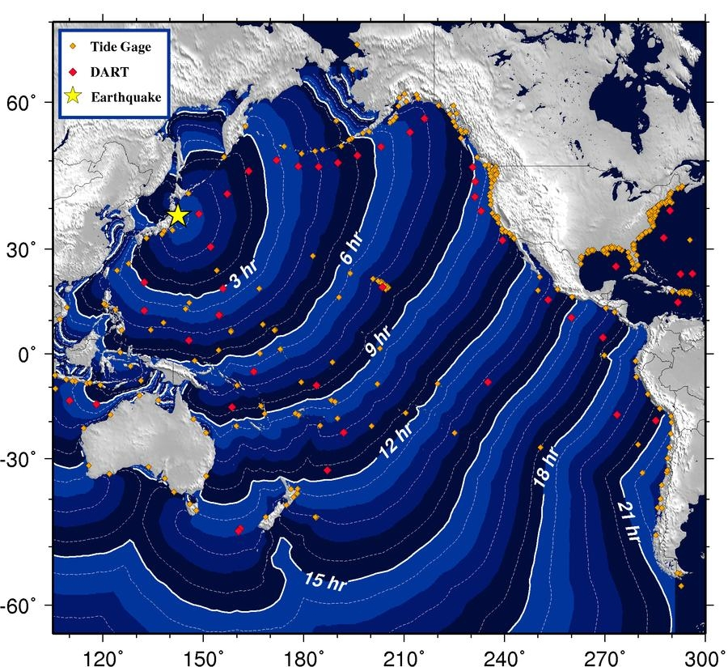

Olas larguísimas que cruzan océanos a la velocidad de un avión
Un barco en alta mar puede tener un tsunami pasando por debajo sin que la tripulación lo note. Horas después, esa misma ola llega a una costa a miles de kilómetros y entra tierra adentro como una pared de agua. ¿Cómo puede ser la misma ola? La respuesta está en una sola fórmula: la velocidad de las olas en aguas someras.
Según la Administración Nacional Oceánica y Atmosférica de Estados Unidos (NOAA), un tsunami es una serie de olas causadas por terremotos o por erupciones volcánicas submarinas [1]. Los centros de alerta de tsunamis de Estados Unidos agregan otras causas: deslizamientos de tierra, que pueden generar tsunamis enormes cerca de su origen aunque pierden energía rápido, y perturbaciones de la presión del aire asociadas a sistemas meteorológicos rápidos, que generan los llamados meteotsunamis [2]. La NOAA aclara que muchas veces se los llama «olas de marea», pero que los oceanógrafos desaconsejan ese nombre porque las mareas tienen poco que ver con ellos [1].
Según la NOAA, la velocidad de un tsunami depende de la profundidad del océano y no de la distancia a su origen [1]. Es el comportamiento de una ola de aguas someras, cuya longitud de onda es mucho mayor que la profundidad, y para la que David Tong, de la Universidad de Cambridge, da la velocidad [3]:
Los centros de alerta lo dicen igual: la velocidad de un tsunami es la raíz cuadrada del producto de la profundidad del agua por la aceleración de la gravedad [2]. En unos 4500 metros de profundidad (15 000 pies) da unos 760 km/h (475 millas por hora): a esa velocidad, un tsunami va de las islas Aleutianas a Hawái en unas cinco horas, o de la costa de Portugal a Carolina del Norte en ocho horas y media [2]. En el océano profundo puede ir tan rápido como un avión a reacción y cruzar un océano entero en menos de un día [2].

La ola de una bañera gigante: si empujás el agua de una bañera con la mano, se forma una ola que recorre toda la bañera, de punta a punta, y toca el fondo en todo su recorrido. Un tsunami es eso, a escala del océano: una ola tan larga que, aunque el mar tenga kilómetros de profundidad, se mueve como si fuera agua poco profunda.
En alta mar, según la NOAA, las olas de un tsunami no aumentan mucho su altura [1]. Pero al acercarse a la costa, la profundidad baja, el tsunami se frena, y sus olas crecen cada vez más [1]. Cerca de tierra, dicen los centros de alerta, se frenan hasta la velocidad de un auto, unos 30 a 50 km/h [2]. La energía que venía repartida en una ola larga y baja se concentra en una ola más corta y mucho más alta (un razonamiento a partir de lo anterior): es el mismo efecto del asomeramiento que hace romper las olas en la playa.
Los centros de alerta recuerdan dos casos recientes. El 26 de diciembre de 2004, un terremoto en el norte de Sumatra produjo olas de hasta unos 50 metros en la costa, que entraron hasta cinco kilómetros tierra adentro; parte de las pérdidas se atribuye a que no había un sistema oficial de alerta en el océano Índico [2]. El 11 de marzo de 2011, frente a Japón, las olas llegaron a unos 39 metros y entraron casi ocho kilómetros [2].
Como en alta mar casi no se ven, para detectarlos la NOAA instaló estaciones DART en regiones con historia de tsunamis destructivos: empezó con 6 boyas en 2001 y llegó a una red de 39 estaciones en marzo de 2008 [4]. Cada estación tiene un sensor de presión anclado en el fondo del mar y una boya en la superficie para transmitir los datos [4]. El sensor mide la presión y la temperatura cada 15 segundos y convierte la presión en la altura de la superficie del mar sobre el fondo [4]. Cuando detecta un evento, pasa a un modo especial de transmisión [4]. Es la ley hidrostática puesta a trabajar: más agua encima, más presión en el fondo.
Dónde ocurren: según los centros de alerta, de los 754 tsunamis confirmados entre 1900 y 2015 en la base de datos histórica mundial, alrededor del 78 % ocurrió en el océano Pacífico, en el «Anillo de Fuego» geológicamente activo, el 8 % en el Atlántico y el Caribe, el 6 % en el Mediterráneo y el 5 % en el océano Índico [2].
Un tsunami es una ola tan larga que se comporta como ola de aguas someras aun en el medio del océano, y su velocidad, √(gH), es la de un avión en aguas profundas. En alta mar es baja y pasa inadvertida; al llegar a la costa se frena, se acorta y crece hasta volverse destructiva. Por eso se lo vigila con sensores de presión en el fondo del mar.
Pregunta para la comunidad: Con c = √(gH), ¿a qué velocidad viaja un tsunami en una plataforma continental de 100 metros de profundidad? ¿Cuántas veces más lento que en el océano profundo, a 4000 metros?